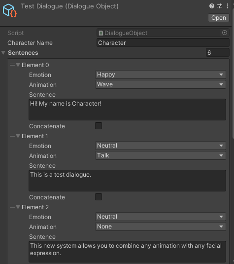

Wow. AI images are great lol. I worked on this really long now when I wrote the promt in the
machine. I had to write it again cause it wasn't quite right. SO exhausted from all that work
lol!!!
Wow. AI images are great lol. I worked on this really long now when I wrote the promt in the
machine. I had to write it again cause it wasn't quite right. SO exhausted from all that work
lol!!!
Wow lol omg he has a face on his nose=??Omg wait why his nose look like that? lol!!
Test Worksample
Category
Worksample that I didn't really create for a test pop up.
A flexible Dialogue Tool created with a designer-friendly system in mind!
The system is built on Scriptable Objects. Designers can freely add and remove sentences and
assign animations and facial expressions.
It is abstract in nature, so that users can decide, how emotion and animation should be
interpreted for their characters, as its animation handlers are entirely
decoupled from the system itself.
In order to give the player a natural feeling, the system will automatically adjust to the
string which it is reading. For instance, any punctuation will lower text speedand characters
that aren't letters will interrupt speaking animations.

Dialogue System
Tool
A simple exploration of a Dialogue System for Unity.Originally created for a potential rework of Floral Frenzy, I have used this tool in several projects, including my most recent, Untitled Dance Game.